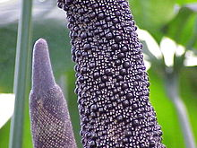

Анту́риум (лат. Anthúrium) — род вечнозелёных растений семейства Ароидные, или Аронниковые (Araceae). Латинское название рода образовано от древнегреческих слов, означающих «цветок» и «хвост».
Травянистые вечнозелёные растения, иногда лазающие и очень редко древовидные. Антуриумы могут встречаться в различных формах, но главным образом это эпифиты, растущие на деревьях, с воздушными корнями, спускающимися до лесной подстилки дождевого тропического леса. Есть среди них много наземных видов, встречаются полуэпифиты, то есть растения, начинающие расти из семени в верхнем ярусе леса и затем дающие воздушные корни, спускающиеся до земли, или начинающие свою жизнь, как наземные растения, а затем, поднимаясь на дерево, превращающеся в эпифитов. Есть среди антуриумов и литофиты. Некоторые находятся в симбиотических отношениях с колониями рабочих муравьёв. У видов саванн стебель редуцирован; грубая толстая пластинка листа сравнительно узкая и сильно вытянутая, черешок очень короткий; в основании растения формируются воздушные корневые гнёзда с направленными вверх корневыми окончаниями, покрытыми веламеном.
Покрывало соцветия чаще зелёное или белое, но нередко и ярко окрашенное, подобно околоцветнику, в красный, фиолетовый, розовый цвета, а может быть и разноцветным. По структуре покрывало может быть кожистым. Цвет покрывала может изменяться от бледно-зелёного до белого, розового, оранжевого или ярко-красного (как у антуриума Андре). Соцветие — початок, который может быть булавовидной, конусовидной, спиралевидной или шаровидной формы и белого, зелёного, красного, розового, фиолетового цвета или комбинации этих цветов. Цветки плотно расположены на початке сериями спиралей и похожи на ромбы и квадраты. Цветки всегда обоеполые, обычно с четырёхчленным околоцветником и четырьмя тычинками; гинецей синкарпный; рыльце чаще дисковидное; завязь двухгнёздная, с 1—2 семязачатками в каждом гнезде.